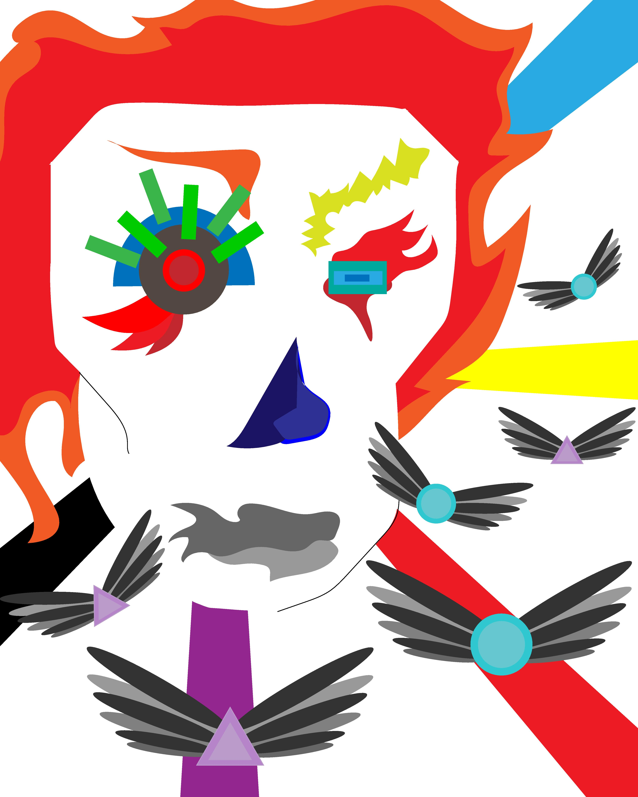
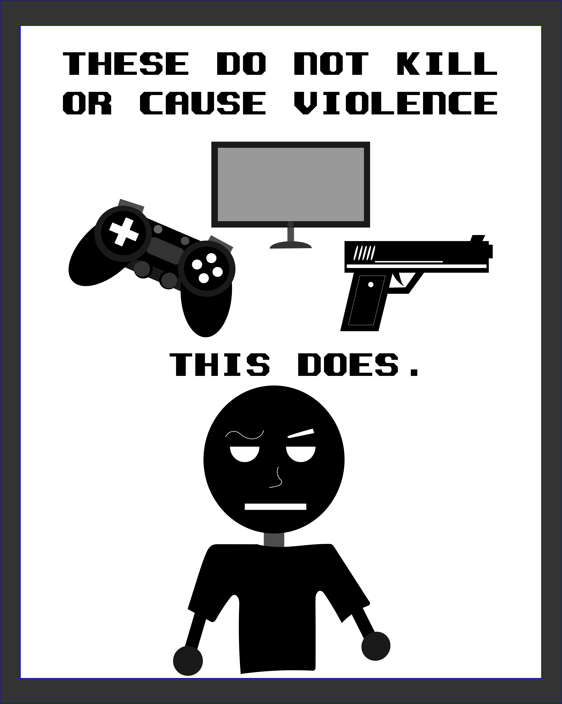

Coat of Arms and Banner
This a coat of arms and a banner that I made, as a way to show my adoration and connection towards the San Jose City Hall due to its futuristic and shiny look.
Simpler Version
Abstract Destruction
This is an abstract representation of humans destroying the planet for the sole purpose of profit. The shapes with wings represent the people and other life forms of the planet that pay the price, meanwhile the abstract face of an evil entity with the different colored lines represents humans gaining their temporary fortune.

The True Culprit
The mainstream media was and still continues to blame video games for violence, so I made this work as a way to spread awareness to people about the TRUE culprit behind mass shootings and other violent acts.
